Гид по стилю
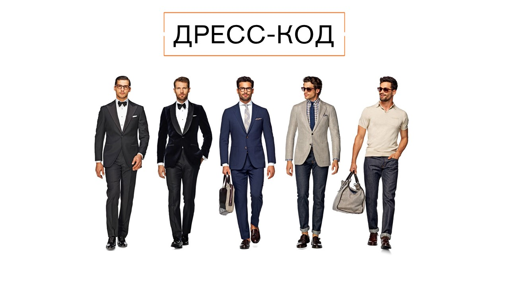Формальный дресс-код White-Tie
Самый строгий вид дресс-кода, который в наше время встречается крайне редко.
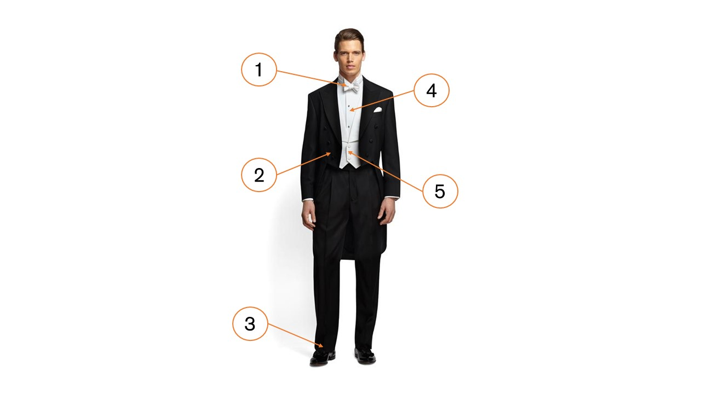Мужчины
- Галстук-бабочка белая
- Черный фрак
- Лаковые туфли
- Белая рубашка
- Белый жилет
Женщины
- Вечернее платье длиной в пол
- Ювелирные украшения
- Перчатки
- Вечерние туфли
- Меховое манто
Где уместно
- Дипломатические встречи
- Церемонии награждений
- Встречи с послами
- На скачки Роял Эскот в Великобритании
- Прием у царской семьи
Полуофициальный дресс-код Black-Tie
Второй по строгости дресс-код является самым распространенным для официальных приемов, светских и торжественных событий.
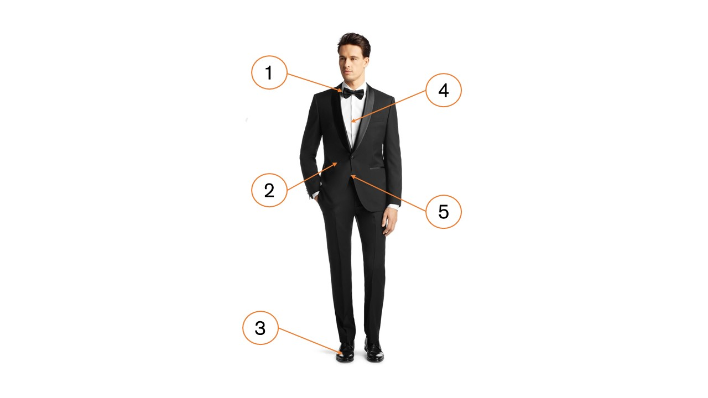Мужчины
- Галстук-бабочка
- Смокинг черный/темно-синий
- Туфли оксфорды/дерби
- Белая рубашка
- Кушак (камербанд)
Женщины
- Вечернее платье длиной в пол/ниже колена
- Бижутерия
- Клатч
- Туфли на каблуке
Где уместно
- Вечерний прием
- Свадебное торжество
- Премьера в театре
- Премия «Оскар»
Деловой дресс-код Business Best и Business Traditional
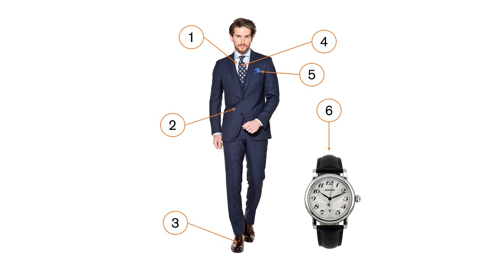Мужчины
- Рубашка
- Классический костюм
- Ботинки оксфорды/дерби
- Галстук
- Карманный платок
- Классические часы
Business Traditional - классический однотонный или комбинированный костюм.
Business Best подразумевает только темно-синий классический костюм с белой рубашкой.
Выбор галстука традиционно – приглушенного оттенка красного, но сейчас возможны и другие вариации цвета.
Женщины
- Жакет
- Блузка светлых оттенков
- Брюки
- Юбка средней длинны
- Туфли на каблуке/классические ботинки
- Колготы телесного цвета
Business Best или Business Traditional женщины значительно ограничены в выборе одежды, цветов и аксессуаров. Строгий женский деловой дресс-код подразумевает, что партнер не должен отвлекаться на разглядывание деталей одежды собеседника, поэтому следует выбирать минималистские вещи сдержанных цветов.
Где уместно
- Встречи деловых партнеров
- Общественные мероприятия
- Праздники и вечеринки
- Конференции
- Работа в офисе
Полуформальный дресс-код Smart casual (Business casual)
Мероприятие с пометкой дресс-код Smart casual подразумевает посещение вечером после работы, то тут допускается микс делового, повседневного стилей и деталей вечернего туалета.
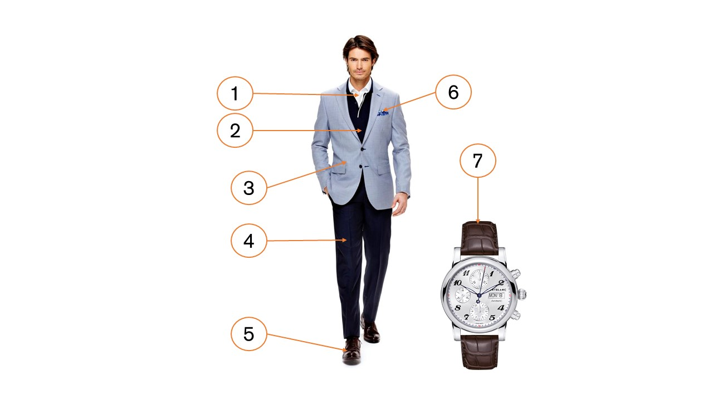Мужчины
- Рубашка
- Пуловер
- Классический пиджак
- Классические брюки
- Ботинки оксфорды/дерби/монки
- Карманный платок
- Классические часы/хронограф
Женщины
- Трикотаж
- Укороченные брюки/юбка средней длины
- Туфли на каблуке/классические ботинки
- Ридикюль
Где уместно
- Встреча деловых партнеров
- Встреча друзей
- Вечеринка
- Работа в офисе
Классический
- Традиционный отложной воротник
- Нейтральный вариант, подходит к большинству мужских лиц
Кент
- Сочетается со всеми видами узлов галстука, исключая чересчур объёмные
- Визуально удлиняет шею
Французский (Акула)
- Воротник с концами, разведенными в стороны на большой угол
- Хороший вариант для любящих большие узлы галстуков
Итон
- Легко узнаваемый, благодаря закруглённым концам
- Универсальный вариант, который можно носить, как с узкими галстуками, так и с более массивными
Баттен-даун
- Воротник имеет петлицы, которые пристёгиваются на пуговицу на самой рубашке
- Он всегда должен быть пристёгнут
Таб
- Концы очень плотно прилегают к стойке благодаря перемычке между концами воротничка
- Такую рубашку нельзя надевать без галстука
Бабочка
- Характерными чертами являются заостренные концы загнуты в сторону
- Угол 45 градусов
Четвертной узел
- Самый популярный и простой способ завязать галстук
Виндзорский узел
- Этот способ и тип узла назван в честь герцога Виндзорского
- Идеально подходит для торжественных мероприятий
- Самый комфортный узел
Полувиндзорский узел
- Подходит для большинства воротников и сорочек
- Использоваться для всех типов галстуков
Правило
- Ширина галстука подбирается под лацканы пиджака
- Не соблюдая это соответствие, Вы рискуете внести дисбаланс в Ваш наряд
Правило
- Зажим для галстука должен быть расположен между третьей и четвертой пуговицей вашей рубашки. Не ниже и не выше
- Верхняя пуговица пиджака всегда застегивается
- Нижняя пуговица всегда должна быть расстегнута

 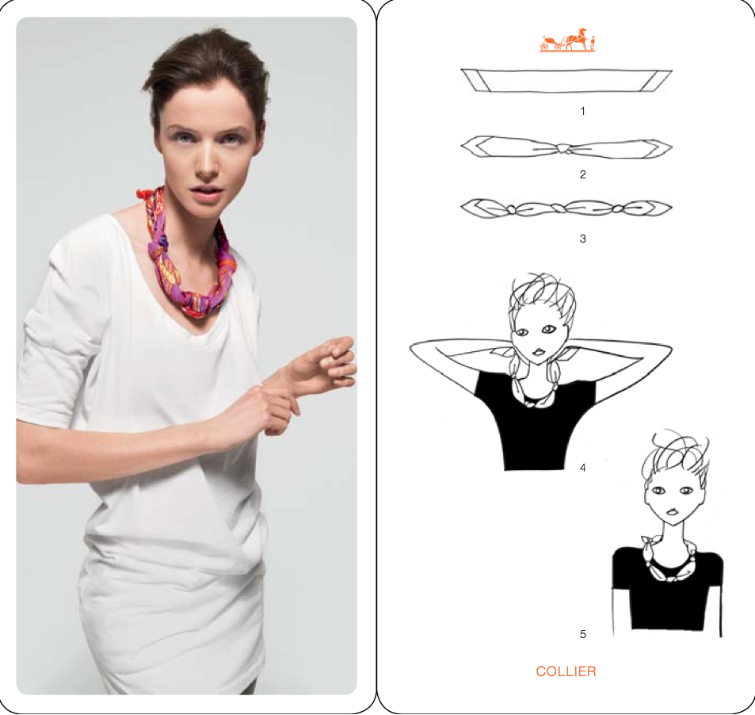
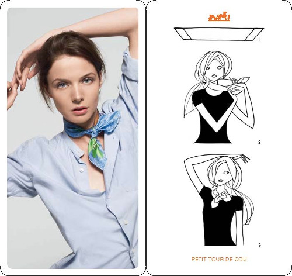
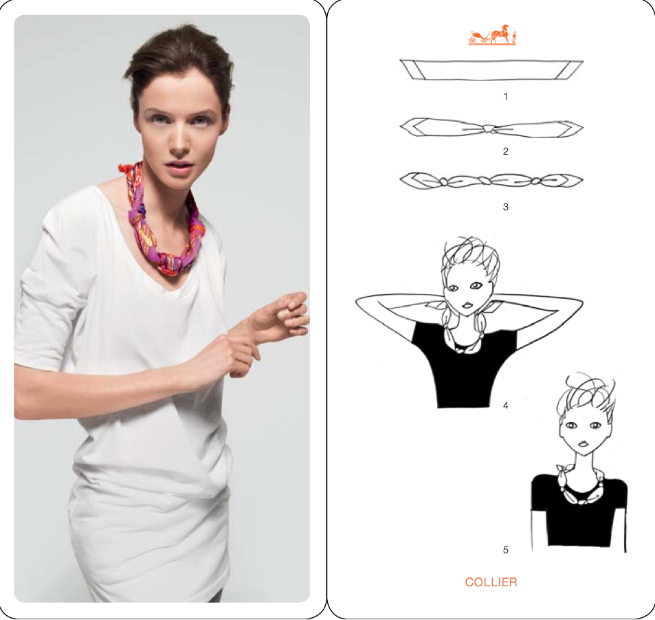
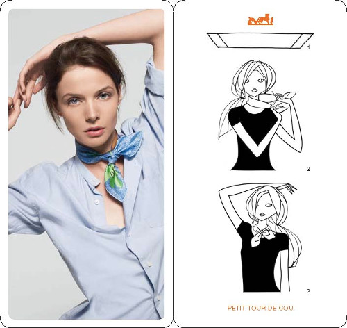
Все мужские модели обуви также существуют в женской интерпретации.
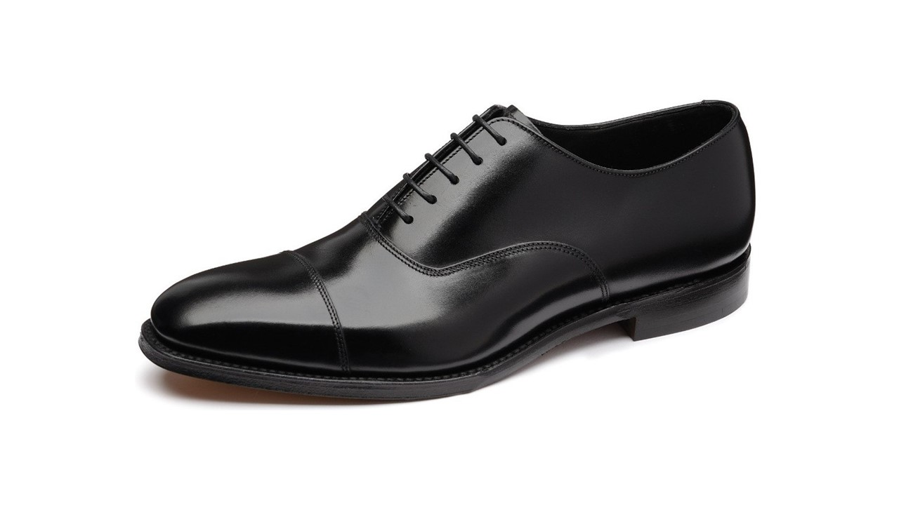Оксфорды
- Имеет закрытую шнуровку
- Эту модель всегда считали официальной и самой строгой обувью
Дерби
- Имеет открытую шнуровку
- Эту модель можно носить на работу и на неофициальные мероприятия
Монки
- Имеет пряжки вместо шнуровки
- Являются универсальной моделью обуви
Лоферы
- Обувь без шнуровки или пряжки
- Являются универсальной моделью обуви
- Можно сочетать с формальной одеждой
Туфли-лодочки
- Не имеют застежек и держатся на ноге за счет прилегания
- Особенность — глубокий вырез и наличие каблука
- Самая универсальная модель туфель

Балетки
- Туфли без каблуков или на очень низком широком каблуке
- Глубокий вырез
Туфли Мери Джейн
- Изначально детские туфли
- Характерная особенность — ремешок на подъеме
- Каблук высокий или очень низкий
Уход за кожей
- Подбирайте средства по уходу для своего типа кожи
В уходе за кожей первым и самым главным правилом является использование косметических средств, специально разработанных для вашего типа кожи. Потребности сухой и жирной кожи существенно различаются. - Уделяйте особое внимание чувствительным участкам кожи
Кожа в определенных местах на лице более тонкая и уязвимая. Она требует особого ухода, особенно кожа вокруг глаз и губы. Эти области являются наиболее чувствительными и требуют особого внимания. - Глаза: зона риска
Кожа вокруг глаз в десять раз тоньше кожи лица в других местах. Используйте специальные средства для ухода за кожей вокруг глаз. - Пилинг - необходимая процедура по уходу за кожей лица
Используйте подходящий для вашей кожи вид пилинга один или два раза в неделю. Пилинг должен быть эффективным, но мягким и не травмировать кожу. Выбирайте средства с нейтральным pH, которые хорошо очищают и смягчают кожу, поддерживая ее естественный баланс. - Увлажнение крайне необходимо
Дерма состоит из воды на 70%, а эпидермис на 15%. Чтобы кожа всегда была хорошо увлажненной, выбирайте увлажняющие средства, которые поддерживают постоянный уровень влаги в коже. Также можно регулярно использовать увлажняющую маску. - Защита от солнца
Вне зависимости от времени года используйте косметические средства с солнцезащитными фильтрами. Они позволяют уменьшить вредное воздействие солнечных лучей, которое ускоряет процесс старения. - Избегайте внешних неблагоприятных факторов
Загрязнение окружающей среды, курение, стресс… Все это оказывает негативное влияние на кожу. Используйте косметические средства, которые защитят вашу кожу от неблагоприятных факторов до выхода из дома, и тщательно очищайте кожу по возвращении домой вечером. - Не забывайте о губах
Как только почувствуете, что это необходимо, используйте регенерирующий крем для губ. Вы можете наносить крем повторно так часто, как вы пожелаете.
Арсенал
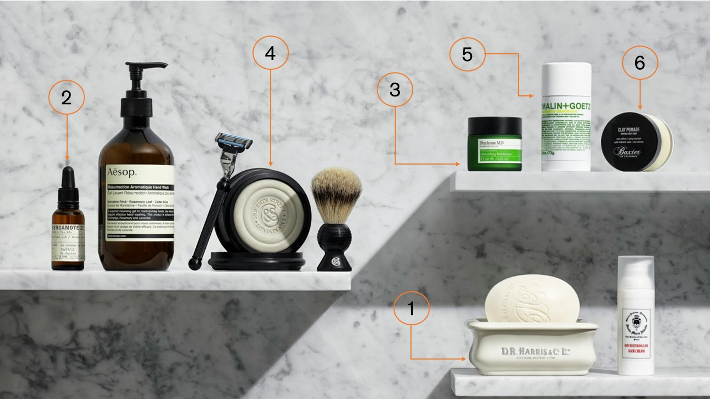- Очищение лица
- Уход для век
- Уход за лицом
- Средства для бритья
- Дезодорант
- Средство для волос
Макияж
Правила офисного макияжа:
Первое и основное правило естественный вид. Макияж на работу выполняется в неярких тонах, так как его цель – сделать ваш вид презентабельным. Для того, чтобы в офисе оценивали вашу компетентность, а не «боевую раскраску», подберите декоративную косметику в оттенках, которые максимально приближены к естественному цвету кожи, бровей и губ.
Второе правило грамотное расставление акцентов, при котором яркими должны быть либо глаза, либо губы.
Третье правило ухоженные брови. Густым и непослушным бровям нужно придать красивую форму. А если природа не одарила вас соболиными бровями, то аккуратно прорисуйте их карандашом в волосковой технике.
Советы:
- не используйте пудру холодных оттенков, так как в голубоватых тонах офисного освещения она будет придавать вам бледный и уставший вид, и подчеркнет любые неровности кожи, поры и морщины.
- аккуратнее используйте розовые тона холодного спектра – они коварно подчеркнут уставшие и покрасневшие белки глаз, нелицеприятные высыпания и воспаления. К такой же опасной категории относятся и тени зеленых оттенков – уставшие глаза в обрамлении таких теней выглядят красными.
- откажитесь от тональных основ с густой текстурой – в холодном освещении офиса такое покрытие сразу бросается в глаза. Кроме того, кондиционированный воздух настолько пересушивает кожу, что сразу подчеркиваются все недостатки.
- выбирайте средства с повышенной стойкостью, так как нет ничего хуже «поплывшего» макияжа. Для теней приобретите специальную базу или ограничьте макияж глаз нанесением стойкой подводки. Следите за губами, чтобы вовремя подправить помаду в случае, если она «съелась» за ланчем.
- ухаживайте за кожей. В течение дня применяйте термальную воду, чтобы не допустить шелушения и пересушивания. Кроме того, термальная вода «прибивает» макияж, смешивая между собой все слои и делая его незаметным. Если ваша кожа склонна к жирности, то имейте при себе запас матирующих салфеточек.
Арсенал
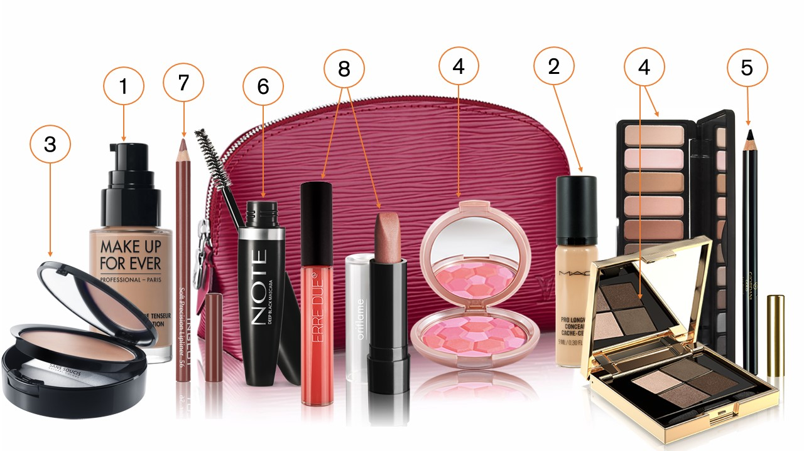- Тональный крем
- Тональный крем
- Компактная пудра
- Румяна
- Тени для век
- Карандаш для глаз тушь
- Карандаш для губ
- Помада/блеск для губ